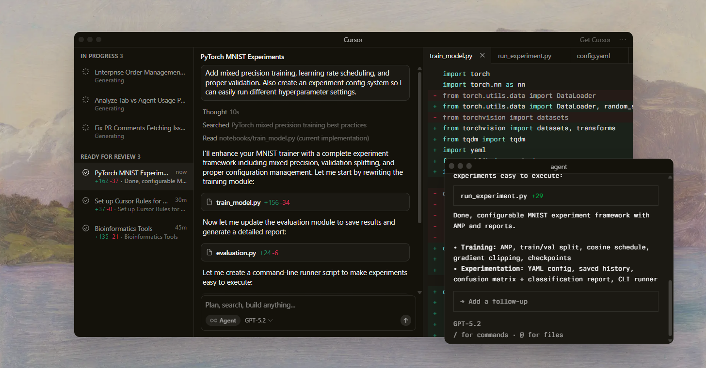

Built to make you extraordinarily productive,
Cursor is the
best way to code with AI.

Trusted every day by teams that build world-class software


Agent turns ideas into code
Accelerate development by handing off tasks to Cursor, while you focus on making decisions.
Learn about Agent ->

Magically accurate autocomplete
Our custom Tab model predicts your next action with striking speed and precision.
Learn about Tab ->Everywhere software gets built
Cursor is in GitHub reviewing your PRs, a teammate in Slack, and anywhere else you work.
Learn about Cursor's ecosystem ->
The new way to build software.
It was night and day from one batch to another, adoption went from single digits to over 80%. It just spread like wildfire, all the best builders were using Cursor.

shadcn
Creator of shadcn/ui
The most useful AI tool that I currently pay for, hands down, is Cursor. It's fast, autocompletes when and where you need it to, handles brackets properly, sensible keyboard shortcuts, bring-your-own-model... everything is well put together.
shadcn
Creator of shadcn/ui
The best LLM applications have an autonomy slider: you control how much independence to give the AI. In Cursor, you can do Tab completion, Cmd+K for targeted edits, or you can let it rip with the full autonomy agentic version.
shadcn
Creator of shadcn/ui
Cursor quickly grew from hundreds to thousands of extremely enthusiastic Stripe employees. We spend more on R&D and software creation than any other undertaking, and there's significant economic outcomes when making that process more efficient and productive.
shadcn
Creator of shadcn/ui
It's official.
I hate vibe coding.
I love Cursor tab coding.
It's wild.
shadcn
Creator of shadcn/ui
It's definitely becoming more fun to be a programmer. It's less about digging through pages and more about what you want to happen. We are at the 1% of what's possible, and it's in interactive experiences like Cursor where models like GPT-5 shine brightest.
shadcn
Creator of shadcn/ui
Stay on the frontier
Use the best model for every task
Choose between every cutting-edge model from OpenAI, Anthropic, Gemini, xAI, and Cursor.
Explore models ↗
Complete codebase understanding
Cursor learns how your codebase works, no matter the scale or complexity.
Learn about codebase indexing ↗
Develop enduring software
Trusted by over half of the Fortune 500 to accelerate development, securely and at scale.
Explore enterprise →
Changelog
Jan 22, 2026
Jan 16, 2026
Jan 8, 2026
Dec 22, 2025
Cursor is an applied research team focused on building the future of software development.
Join us →
Towards self-driving codebases
We're making a part of our multi-agent research harness available to try today in preview.
Towards self-driving codebases
We're making a part of our multi-agent research harness available to try today in preview.
Towards self-driving codebases
We're making a part of our multi-agent research harness available to try today in preview.